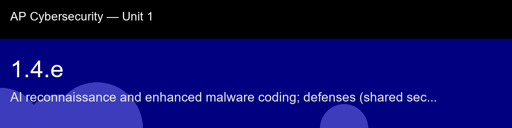

1.4.e, AI reconnaissance and enhanced malware coding; defenses (shared secrets, MFA, verify output)
Before class today. Before an attacker exploits a system, they study it. The study phase is called reconnaissance, and it has always been the most time-consuming part of an attack. An adversary who wants to break into a bank's network must first discover which subdomains exist, which software versions are running, which employees might be deceived, and which CVEs match those software versions.
The intuition to hold onto: The honest framing for this skill: AI hasn't invented new attack categories here, port scans, credential stuffing, and polymorphic malware all predate any of this, what changed is the unit economics. Reconnaissance that used to cost a skilled human a full day now costs a script a few minutes, and it scales to hundreds of targets in parallel. When you see "847 DNS queries in 2 seconds," the point isn't the specific number, it's that automated speed itself becomes the detectable signature: no human browsing behavior looks like that, regardless of what the human's intent might have been.
A myth worth busting before we start: "Only skilled attackers use AI for recon.", AI tools lower the skill floor substantially. Script-level actors can now conduct reconnaissance that previously required professional penetration testers. The threat model must account for low-sophistication attackers with AI-assisted capabilities.
Today's goal: Analyze a log of security events, detect AI-assisted reconnaissance patterns, and recommend targeted defenses.
Handout: pre-lecture-handout.docx.

## 1.4.e, AI reconnaissance and enhanced malware coding; defenses (shared secrets, MFA, verify output)
**Before class today.** Before an attacker exploits a system, they study it. The study phase is called reconnaissance, and it has always been the most time-consuming part of an attack. An adversary who wants to break into a bank's network must first discover which subdomains exist, which software versions are running, which employees might be deceived, and which CVEs match those software versions.
**The intuition to hold onto:** The honest framing for this skill: AI hasn't invented new attack categories here, port scans, credential stuffing, and polymorphic malware all predate any of this, what changed is the unit economics. Reconnaissance that used to cost a skilled human a full day now costs a script a few minutes, and it scales to hundreds of targets in parallel. When you see "847 DNS queries in 2 seconds," the point isn't the specific number, it's that automated speed itself becomes the detectable signature: no human browsing behavior looks like that, regardless of what the human's intent might have been.
**A myth worth busting before we start:** "Only skilled attackers use AI for recon.", AI tools lower the skill floor substantially. Script-level actors can now conduct reconnaissance that previously required professional penetration testers. The threat model must account for low-sophistication attackers with AI-assisted capabilities.
**Today's goal:** Analyze a log of security events, detect AI-assisted reconnaissance patterns, and recommend targeted defenses.
Handout: `pre-lecture-handout.docx`.